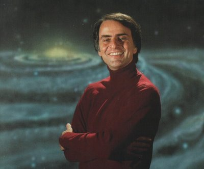

ALLISON, T., & D. V. CICCHETTI. Sleep in mammals: ecological and constitutional correlates. Science, vol. 149, pp. 732-734, 1976.
AREHART-TREICHEL, JOAN. Brain peptides and psychopharmacology. Science News, vol. 110, pp. 202-206, 1976.
ARONSON, L. R., TOBACH, E., LEHRMAN, D. S., & J. S. ROSENBLATT, orgs. Development and evolution of behavior: essays in memory of T. C. Schneirla. W. H. Freeman, San Francisco, 1970.
BAKKER, ROBERT T. Dinosaur renaissance. Scientific American, vol. 232, pp. 58-72 ss., abril de 1975.
BITTERMAN, M. E. Phyletic differences in learning. American Psychologist, vol. 20, pp. 396-410, 1965.
BLOOM, F., D. SEGAL, N. LING & R. GUILLEMIN. Endorphins: profound behavioral effects in rats suggest new etiological factors in mental illness. Science, vol. 194, pp. 630-632, 1976.
BOGEN, J. E. The other side of the brain. II. An appositional mind. Bulletin Los Angeles Neurological Societies, vol. 34, pp. 135-162, 1969.
BRAMLETTE, M. N. Massive extinctions in biota at the end of mesozoic time. Science, vol. 148, pp. 1696-1699, 1965.
BRAND, STEWART. Two cybernetic frontiers. Random House, Nova York, 1974.
BRAZIER, M. A. B. The electrical activity of the nervous system. Macmillan, Nova York, 1960.
BRONOWSKI, JACOB. The ascent of man. Little, Brown, Boston, 1973.
BRITTEN, R. J. & E. H. DAVIDSON. Gene regulation for higher cells: a theory. Science, vol. 165, pp. 349-357, 1969.
CLARK, W. E. LEGROS. The antecedents of man: an introduction to the evolution of the primates. Edinburgh University Press, Edimburgo, 1959.
COBERT, EDWIN. Dinosaurs: their discovery and their world. E. P. Dutton, Nova York, 1961.
COLE, SONIA. Leakey's luck: the life of Louis S. B. Leakey. Harcourt Brace Jovanovich, Nova York, 1975.
COPPENS, YVES. The great East African adventure. CNRS Research, vol. 3, nº 2, pp. 2-12, 1976.
COPPENS, YVES, F. CLARK HOWELL, GLYNN LL. ISAAC & RICHARD E. F. LEAKEY, orgs. Earliest man and environments in the Lake Rudolf Basin: stratigraphy, palaeoecology and evolution. University of Chicago Press, Chicago, 1976.
CULLITON, BARBARA J. The Haemmerli affair: is passive euthanasia murder? Science, vol. 190, pp. 1271-1275, 1975.
CUTLER, RICHARD G. Evolution of human longevity and the genetic complexity governing aging rate. Proceedings of the National Academy of Sciences, vol. 72, pp. 4664-4668, 1975.
DEMENT, WILLIAM C. Some must watch while some must sleep. W. H. Freeman, San Francisco, 1974.
DERENZI, E., FAGLIONI, P., & H. SPINNLER. The performance of patients with unilateral brain damage on face recognition tasks. Cortex, vol. 4, pp. 17-34, 1968.
DEWSON, J. H. Preliminary evidence of hemispheric asymmetry of auditory function in monkeys. In Lateralization in the nervous system, S. Harnard, org. Academic Press, Nova York, 1976.
DIMOND, STUART, LINDA FARRINGTON & PETER JOHNSON. Differing emotional responses from right and left hemispheres. Nature, vol. 261, pp. 690-692, 1976.
DIMOND, S. J., & J. G. BEAUMONT, orgs. Hemisphere function in the human brain. Wiley, Nova York, 1974.
DOBZHANSKY, THEODOSIUS. Mankind evolving: the evolution of the human species. Yale University Press, New Haven, Conn., 1962.
DOTY, ROBERT W. The brain. Britannica Yearbook of Science and the Future, Encyclopaedia Britannica, Chicago, 1970, pp. 34-53.
ECCLES, JOHN C. The understanding of the brain. McGraw-Hill, Nova York, 1973.
ECCLES, JOHN C., org., Brain and conscious experience. Springer-Verlag, Nova York, 1966.
EIMERL, SAREL & IRVEN DEVORE. The primates. Life Nature Library, Time Inc., Nova York, 1965.
FARE, PETER. Man's rise to civilization as shown by the Indians of North America from primeval times to the coming of the industrial state. E. P. Dutton, Nova York, 1968.
FINK, DONALD G. Computers and the human mind: an introduction to artificial intelligence. Doubleday Anchor Books, Nova York, 1966.
FRISCH, JOHN H. Research on primate behavior in Japan. American Anthropologist, vol. 61, pp. 584-596, 1959.
FROMM, ERICH. The forgotten language: an introduction to the understanding of dreams, fairy tales and myths. Grove Press, Nova York, 1951.
GALIN, D., & R. ORNSTEIN. Lateral specialization of cognitive mode: an EEG Study. Psychophysiology, vol. 9, pp. 412-418, 1972.
GANTT, ELIZABETH. Phycobilisomes: light-harvesting pigment complexes. Bioscience, vol. 25, pp. 781-788, 1975.
GARDNER, R. A. & BEATRICE T. GARDNER. Teaching sign-language to a chimpanzee. Science, vol. 165, pp. 664-672, 1969.
GAZZANIGA, M. S. Consistency and diversity in brain organization. Proceedings of the Conference on Evolution and Lateralization of the Brain, annals of the New York Academy of Sciences, 1977.
GAZZANIGA, M. S. The split brain in man. Scientific American, vol. 217, pp. 24-29, 1967.
GERARD, RALPH W. What is memory?. Scientific American, vol. 189, pp. 118-126, setembro de 1953.
GOODALL, JANE. Tool-using and aimed throwing in a community of free-living chimpanzees. Nature, vol. 201, pp. 1264-1266, 1964.
GOULD, STEPHEN JAY. This view of life: Darwin's untimely burial. Natural History, vol. 85, pp. 24-30, outubro de 1976.
GRAY, GEORGE W. The great ravelled knot. Scientific American, vol. 179, pp. 26-39, outubro de 1948.
GRIFFITH, RICHARD M., MIYAGI, OTOYA & TAGO, AKIRA. The universality of typical dreams: Japanese vs. Americans., American Anthropologist, vol. 60, pp. 1173-1179, 1958.
GRINSPON, LESTER, EWALT, J. R. & R. I. SCHADER. Schizophrenia: pharmacotherapy and psychotherapy. Wilkins, Baltimore, 1972.
HAMILTON, C. R. An assessment of hemispheric specialization in monkeys. Proceedings of the Conference on Evolution and Lateralization of the Brain, annals of the New York Academy of Sciences, 1977.
HARNER, M. J., org. Hallucinogens and shamanism. Oxford University Press, Londres, 1973.
HARRIS, MARVIN. Cows, pigs, wars and witches: the riddles of culture. Random House, Nova York, 1974.
HARTMANN, ERNEST L. The functions of sleep. Yale University Press, New Haven, Conn., 1973.
HAYES, C. The ape in our house. Harper, Nova York, 1951.
HERRICK, C. JUDSON. A sketch of the origin of the cerebral hemispheres. Journal of Comparative Neurology, vol. 32, pp. 429-454, 1951.
HOLLOWAY, RALPH L. Cranial capacity and the evolution of the human brain. American Anthropologist, vol. 68, pp. 103-121, 1966.
HOLLOWAY, RALPH L. The evolution of the primate brain: some aspects of quantitative relations. Brain Research, vol. 7, pp. 121-172, 1968.
HOWELL, F. CLARK. Early man. Life Nature Library, Time, Inc., Nova York, 1965.
HOWELLS, WILLIAM. Mankind in the making: the story of human evolution. Rev. ed. Doubleday, Nova York, 1967.
HUBEL, D. H., & WIESEL, T. N. Receptive fields of single neurons in the cat's striate cortex. Journal of Physiology, vol. 150, pp. 91-104, 1960.
INGRAM, D. Cerebral speech lateralization in young children. Neuropsychologia, vol. 13, pp. 103-105, 1975.
JERISON, H. J. Evolution of the brain and intelligence. Academic Press, Nova York, 1973.
JERISON, H. J. The theory of encephalization. Proceedings Conference of Evolution and Lateralization of the Brain, annals of the New York Academy of Sciences, 1977.
KELLER, HELEN. The story of my life. Nova York, 1902.
KORSAKOV, S. On the psychology of microcephalics [1893]. Reimpresso em American Journal of Mental Deficiency Research, vol. 4, pp. 42-47, 1957.
KROEBER, T. Ishi in two worlds. University of California Press, Berkeley, 1961.
KURTÉN, BJÖRN. Not from the apes: the history of man’s origins and evolution. Vintage Books, Nova York, 1972.
LA BARRE, WESTON. The human animal. University of Chicago Press, Chicago, 1954.
LANGER, SUSANNE. Philosophy in a new key: a study in the symbolism of reason, rite and art. Harvard University Press, Cambridge, Mass., 1942.
LASHLEY, K. S. In search of the engram. Symposia of the Society of Experimental Biology, vol. 4, pp. 454-482, 1950.
LASHLEY, K. S. Persistent problems in the evolution of mind. Quarterly Review of Biology, vol. 24, pp. 28-42, 1949.
LEAKEY, R. E. F., & A. C. WALKER. Australopithecus, Homo erectus and the single species hypothesis. Nature, vol. 261, pp. 572-574, 1976.
LEAKEY, RICHARD E. Hominids in Africa. American Scientist, vol. 64, nº 2, p. 174, 1976.
LEE, RICHARD, & IRVEN DEVORE, orgs. Man, the hunter. Aldine, Chicago, 1968.
LE MAY, M. & GESCHWIND, N. Hemispheric differences in the brain of great apes. Brain behavior and evolution, vol. 11, pp. 48-62, 1975.
LETTVIN, J. Y., MATTURANA, H. R., MCCULLOCH, W. S. & PITTS, W. J. What the frog’s eye tells the frog’s brain. Proceedings of Institute of Radio Engineers, vol. 47, pp. 1940-1951.
LIEBERMAN, P., KLATT, D. & W. H. WILSON. Vocal tract limitations on the vowel repertoires of Rhesus monkeys and other non-human primates. Science, vol. 164, pp. 1185-1187, 1969.
LINDEN, EUGENE. Apes, man and language. E. P. Dutton, Nova York, 1974.
LONGUET-HIGGINS, H. C. Perceptions of melodies. Nature, vol. 263, pp. 646-653, 1976.
MACLEAN, PAUL D. On the evolution of the mentalities (no prelo).
MACLEAN, PAUL D. A triune concept of the brain and behavior. University of Toronto Press, Toronto, 1973.
MCCULLOCH, W. S. & PITTS, W. A logical calculus of the ideas immanent in nervous activity. Bulletin of mathematical biophysics, vol. 5, pp. 115-133, 1943.
MCHENRY, HENRY. Fossils and the mosaic nature of human evolution. Science, vol. 190, pp. 425-431, 1975.
MEDDIS, RAY. On the functions of sleep. Animal Behaviour, vol. 23, pp. 676-691, 1975.
METTLER, F. A. Culture and the structural evolution of the neural system. American Museum of Natural History, Nova York, 1956.
MILNER, BRENDA, CORKIN, SUZANNE & TEUBER, HANS-LUKAS. Further analysis of the hippocampal amnesic syndrome: 14-year follow-up study of H.M. Neuropsychologia, vol. 16, pp. 215-234, 1968.
MINSKY, MARVIN. Artificial intelligence. Scientific American, vol. 214, pp. 19-27, 1966.
MITTWOCH, URSULA. Human anatomy. Nature, vol. 261, p. 364, 1976.
NEBES, D. & R. W. SPERRY. Hemispheric deconnection syndrome with cerebral birth injury in the dominant arm area. Neuropsychologia, vol. 9, pp. 247-259, 1971.
OXNARD, C. E. The place of the australopithecines in human evolution: grounds for doubt?. Nature, vol. 258, pp. 389-395, 1975.
PENFIELD, W. & L. ROBERTS. Speech and brain mechanisms. Princeton University Press, Princeton, N.J., 1959.
PENFIELD, W. & T. C. ERICKSON. Epilepsy and cerebral localization. Charles C. Thomas, Springfield, Ill., 1941.
PILBEAN, DAVID. The ascent of man – an introduction to human evolution. MacMillan, Nova York, 1972.
PILBEAN, D. & S. J. GOULD. Size and scaling in human evolution. Science, vol. 186, pp. 892-901, 1974.
PLATT, JOHN R. The step to man. John Wiley, Nova York, 1966.
PLOOG, D. W., BLITZ, J. & PLOOG, F. Studies on social and sexual behavior of the squirrel monkey (Saimiri sciureus). Folia Primatologica, vol. 1, pp. 29-66, 1963.
POLIAKOV, G.I. Neuron structure of the brain. Harvard University Press, Cambridge, Mass., 1972.
PREMACK, DAVID. Language and intelligence in ape and man. American Scientist, vol. 64, pp. 674-683, 1976.
PRIBRAM, K. H. Languages of the brain. Prentice-Hall, Englewood Cliffs, N.J., 1971.
RADINSKY, LEONARD. Oldest horse brain: more advanced than previously realized. Science, vol. 194, pp. 626-627, 1976.
RADINSKY, LEONARD. Primate brain evolution. American Scientist, vol. 63, pp. 656-663, 1975.
RALL, W. Theoretical significance of dendritic trees for neuronal input-output relations. In Neural Theory and Modeling, R. F. Reiss, ed., Stanford University Press, Stanford, 1964.
ROSE, STEVEN. The conscious brain. Alfred A. Knopf, Nova York, 1973.
ROSENZWEIG, MARX R., EDWARD L. BENNETT & MARIAN CLEEVES DIAMOND. Brain changes in response to experience. Scientific American, vol. 226, nº 2, pp. 22-29, fevereiro de 1972.
RUMBAUGH, D. M., GILL, T. V. & E. C. VON GLASERFELD. Reading and sentence completion by a chimpanzee. Science, vol. 182, pp. 731-735, 1973.
RUSSELL, DALE A. A new specimen of Stenonychosaurus from the Oldman formation (Cretaceous) of Alberta. Canadian Journal of Earth Sciences, vol. 6, pp. 595-612, 1969.
RUSSELL, DALE A. Reptilian diversity and the Cretaceous-tertiary transition in North America. Geological Society of Canada Special Paper nº 13, pp. 119-136, 1973.
SAGAN, CARL. The cosmic connection: an extraterrestrial perspective. Doubleday, Nova York, 1973; Dell, Nova York, 1975.
SAGAN, CARL, org. Communication with extraterrestrial intelligence. MIT Press, Cambridge, Mass., 1973.
SCHALLER, GEORGE. The mountain gorilla: ecology and behavior. University of Chicago Press, Chicago, 1963.
SCHANK, R. C. & K. M. COLBY, orgs. Computer models of thought and language. W. H. Freeman, San Francisco, 1973.
SCHMITT, FRANCIS O., DEV, PARVATI & BARRY H. SMITH. Electronic processing of information by brain cells. Science, vol. 193, pp. 114-120, 1976.
SHKLOVSKII, I. S. & CARL SAGAN. Intelligent life in the universe. Dell, Nova York, 1967.
SNYDER, F. Toward an evolutionary theory of dreaming. American Journal of Psychiatry, vol. 132, pp. 121-142, 1966.
SPERRY, R. W. Perception in the absence of the neocortical commissures. In Perception and its disorders, Research Publication of the Association for Research in Nervous Mental Diseases, vol. 48, 1970.
STAHL, BARBARA J. Early and recent primitive brain forms. Proceedings of the Conference on Evolution and Lateralization of the Brain, annals of the New York Academy of Sciences, 1977.
SWANSON, CARL P. The Natural History of Man. Prentice-Hall, Englewood Cliffs, N.J., 1973.
TENG, EVELYN LEE, LEE, P. H., YANG, K. S. & P. C. CHANG. Handedness in a Chinese population: biological, social and pathological factors. Science, vol. 193, pp. 1148-1150, 1976.
TEUBER, HANS-LUKAS. Effects of focal brain injury on human behavior. In The Nervous System, Donald B. Tower, editor-in-chief, vol. 2: The Clinical Neurosciences. Raven Press, Nova York, 1975.
TEUBER, HANS-LUKAS, MILNER, BRENDA & VAUGHAN, H. G., JR. Persistent anterograde amnesia after stab wound of the basal brain. Neuropsychologia, vol. 6, pp. 267-282, 1968.
TOWER, D. B. Structural and functional organization of mammalian cerebral cortex: the correlation of neurone density with brain size. Journal of Comparative Neurology, vol. 101, pp. 19-51, 1954.
TROTTER, ROBERT J. Language evolving, part II. Science News, vol. 108, pp. 378-383, 1975.
TROTTER, ROBERT J. Sinister psychology. Science News, vol. 106, pp. 220-222, 5 de outubro de 1974.
TURKEWITZ, GERALD. The development of lateral differentiation in the human infant. Proceedings of the Conference on Evolution and Lateralization of the Brain, annals of the New York Academy of Sciences, 1977.
VACROUX, A. Microcomputers. Scientific American, vol. 232, pp. 32-40, maio de 1975.
VAN LAWICK-GOODALL, JANE. In the shadow of man. Houghton-Mifflin, Boston, 1971.
VAN VALEN, LEIGH. Brain size and intelligence in man. American Journal of Physical Anthropology, vol. 40, pp. 417-424, 1974.
VON NEUMANN, JOHN. The Computer and the brain. Yale University Press, New Haven, Conn., 1958.
WALLACE, PATRICIA. Unravelling the mechanism of memory. Science, vol. 190, pp. 1076-1078, 1975.
WARREN, J. M. Possibly unique characteristics of learning by primates. Journal of Human Evolution, vol. 3, pp. 445-454, 1974.
WASHBURN, SHERWOOD L. Tools and human evolution. Scientific American, vol. 203, pp. 62-75, setembro de 1960.
WASHBURN, S. L. & R. MOORE. Ape into man. Little, Brown, Boston, 1974.
WEBB, W. B. Sleep, the gentle tyrant. Prentice-Hall, Englewood Cliffs, N. J., 1975.
WEIZENBAUM, JOSEPH. Conversations with a mechanical psychiatrist. The Harvard Review, vol. 111, nº 2, pp. 68-73, 1965.
WENDT, HERBERT. In search of Adam. Collier Books, Nova York, 1963.
WITELSON, S. F. & W. PALLIE. Left hemisphere specialization for language in the newborn: neuroanatomical evidence of asymmetry. Brain, vol. 96, pp. 641-646, 1973.
YENI-KOMSHIAN, G. H. & D. A. BENSON. Anatomical study of cerebral asymmetry in the temporal lobe of humans, chimpanzees, and Rhesus monkeys. Science, vol. 192, pp. 387-389, 1976.
YOUNG, J. Z. A model of the brain. Clarendon Press, Oxford, 1964.
Agradecimentos
Escrever um livro sobre um assunto alheio à própria formação é, na melhor das melhores hipóteses, uma imprudência. Mas, como já expliquei, a tentação foi irresistível. Quaisquer virtudes porventura existentes nesta obra devem-se em grande parte às pessoas que realizaram a pesquisa fundamental relatada e aos profissionais das ciências biológicas e sociais que tiveram a gentileza de ler e reagir a meus argumentos. Quanto aos comentários críticos e às acaloradas discussões, tenho uma dívida de gratidão para com L. S. B. Leakey e Hans-Lukas Teuber, recentemente falecidos, para com Joshua Lederberg, James Maas, John Eisenberg, Bernard Campbell, Lester e David Grinspoon, Stephen Jay Gould, William Dement, Geoffrey Bourne, Philip Morrison, Charles Hockett, Ernest Hartmann, Richard Gregory, Paul Rozin, Jon Lomberg, Timothy Ferris, e sobretudo para com Paul MacLean. Muito tenho de agradecer pelo desvelo que muitos deles, bem como a redatora Anne Freedgood e a revisora Nancy Inglis, ambas da editora Random House, demonstraram ao ler os primeiros rascunhos deste livro. É desnecessário dizer que eles não são responsáveis por minhas especulações, nem pelos erros cometidos. Sou grato a Linda Sagan e a Sally Forbes pela pesquisa das ilustrações; a vários colaboradores pela reprodução de artigos científicos ainda inéditos; e a Don Davis pela pintura da capa, que não pretende ser uma representação literal de nenhuma época histórica da Terra, senão uma metáfora de algumas das ideias expostas. Uma parcela desse trabalho só foi possível graças à instituição da licença-prêmio na Universidade Cornell. Sou também agradecido à generosa hospitalidade dispensada por L. E. H. Trainor, M. Silverman, C. Lumsden e Andrew Baines, diretor do New College, todos filiados à Universidade de Toronto. Partes consideráveis do capítulo I foram publicadas na revista Natural History. Alguns dos conceitos presentes neste livro foram primeiramente lançados num colóquio no Centro de Saúde Mental de Massachusetts e no Departamento de Psiquiatria da Escola de Medicina da Universidade de Harvard, e também numa conferência na Fundação L. S. B. Leakey no Instituto de Tecnologia da Califórnia. A produção deste livro muito deve à capacidade datilográfica de Mary Roth e, em especial, à dedicada transcrição em muitos rascunhos realizadas por Shirley Arden.
Especulador científico ou profeta do futuro? Pesquisador responsável ou Dom Quixote das ciências? Criticado por uns, endeusado por outros, admirado pela maioria, Carl Sagan (1934-1996) mantém, apesar de tudo, inabalável prestígio na comunidade científica internacional.
Um dos mais dedicados estudiosos da possibilidade de vida em outros planetas e galáxias, Sagan teve público fiel, que consagrou suas obras em todas as partes do mundo, ao mesmo tempo em que é olhado com desconfiança e até mesmo execrado por uma corrente de cientistas mais ortodoxos.
Nada mal para este ambicioso nova-yorkino do Brooklyn, nascido a 9 de novembro de 1934, que aos doze anos já pensava em ser cientista, a despeito do ceticismo dos mais idosos, como seu avô, quando o menino o avisou de que seria astrônomo: “Muito bem”, disse o velho, “mas como é que você vai ganhar a vida?”
Desde então, devorou uma incrível variedade de livros, especialmente ficção científica e clássicos, estimulado que foi por sua mãe, americana, e por seu pai, imigrante russo que trabalhava como cortador numa indústria de confecções.
Com pouco mais de vinte anos, Carl Sagan já trabalhava numa teoria que procurava as explicações para misteriosas emissões de rádio do planeta Vênus. Em 1960, estudante graduado em astronomia, recebia convite da NASA para participar de seu primeiro programa exobiológico. Formado também em biologia, passou a lecionar na Universidade de Harvard, de onde foi afastado em 1968, por suas ideias serem consideradas um tanto ousadas para a linha de ensino adotada pela escola. Ensinaria ainda na Faculdade de Medicina de Stanford, antes de assumir a cadeira de astronomia e ciências espaciais na Universidade Cornell. Exerce hoje decisiva influência nos projetos espaciais norte-americanos, como consultor oficial da NASA.
Autor de inúmeros artigos e livros científicos que se transformaram em verdadeiros best sellers, entre os quais o polêmico “A Conexão Cósmica” e este “Os Dragões do Éden” (prêmio Pulitzer de 1978), uma audaciosa meditação sobre as complexidades do cérebro humano, Carl Sagan é também o responsável pela preparação de uma importante série de televisão chamada “Cosmos”.
Assim, no trabalho e na pesquisa, expondo complexos princípios científicos, mostra-se ao mesmo tempo lúcido e lírico. Acima de todas as censuras e oposições, celebra a ciência como a “alegria do saber” e parece perfeitamente consciente de seu papel de franco-atirador na vanguarda dos estudos científicos.
Digitalizado em 2022. Os links da internet são um bônus da digitalização ;-)
